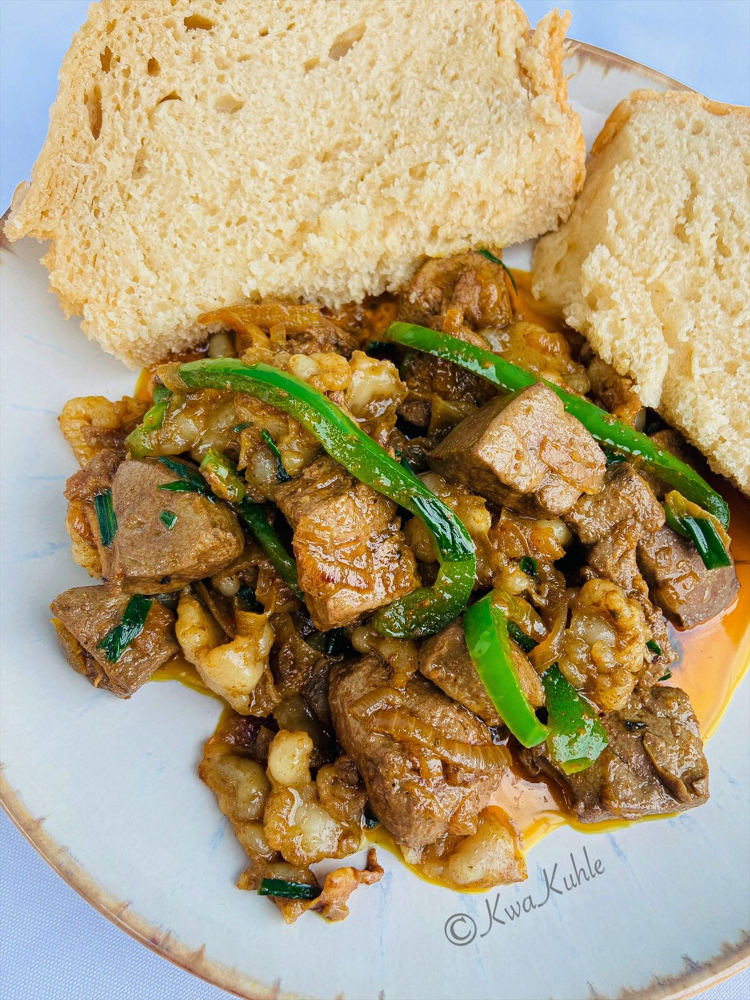
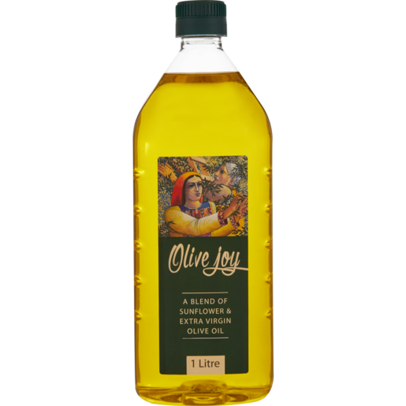
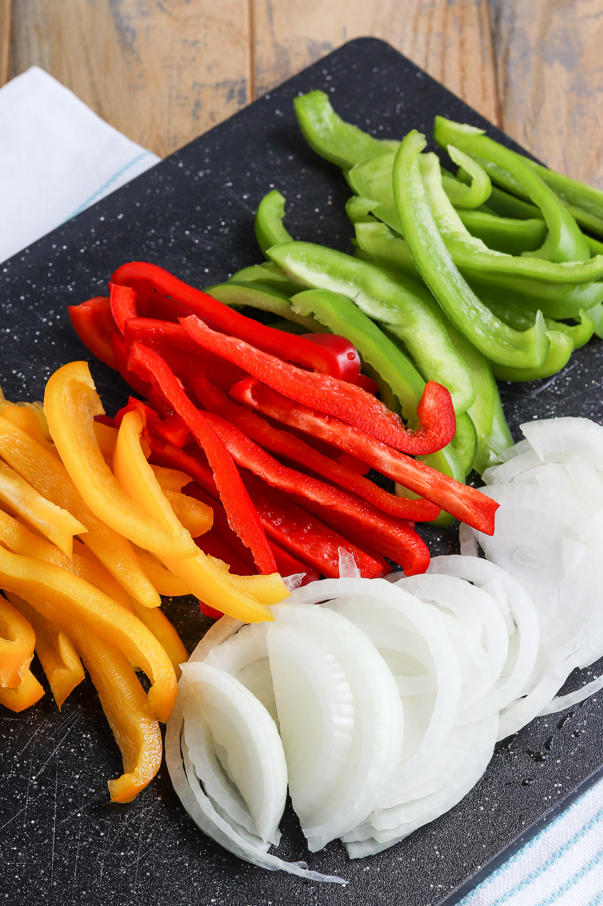
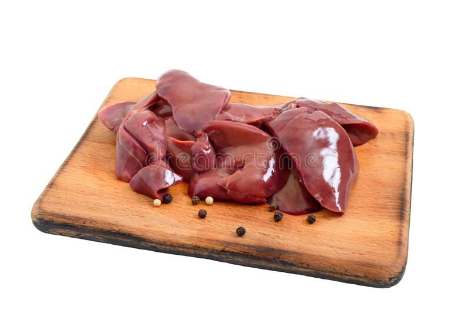
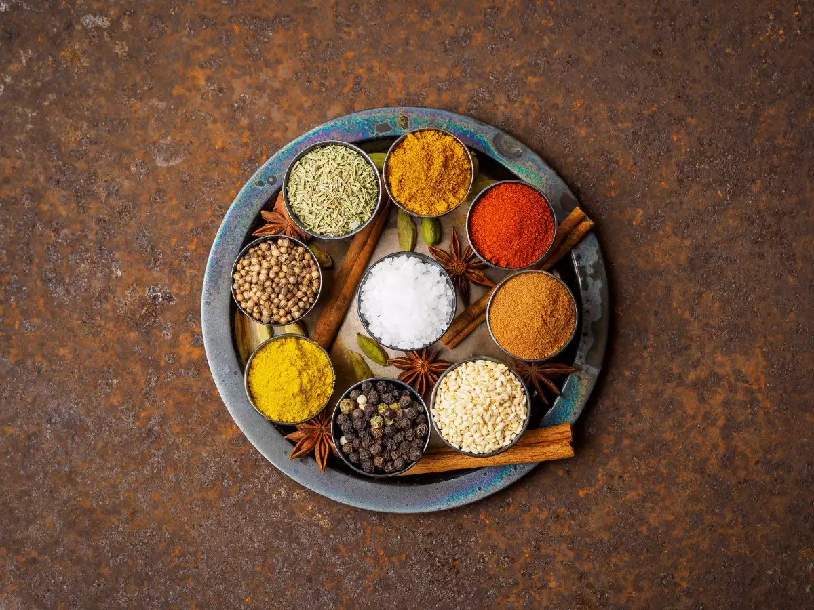
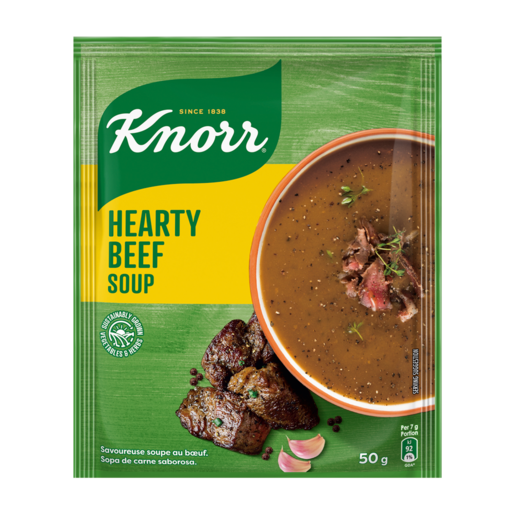

Home
Ingredients
Recipe
Feedback
My Favourite Meal
Home

Name of the meal:[iSibindi]
Ingredients
Cooking Oil
Onions and Peppers
Raw Liver
Salt and Spices
Hearty Beef Soup Pack
Recipe
"Step 1":[Chop your onion and peppers ,and fry them in hot cooking oil]
"Step 2":[Add spices and salt and stir until mixed nicely,then pour your liver cut into quarter squares]
"Step 3":[Let it fry in a medium heat and cover the pot for a few minutes]
"Step 4":[Stir again and open the pot to fry the liver until you see its cooked perfectly]
"Step 5":[Start to prepare your Hearty beef soup thickner with water ,poor the liver and let it simmer for a few minutes]
"Step 6":[Its Ready!You may enjoy it with regular bread or steamed bread. Enjoy!]
Feedback
Your Feedback: